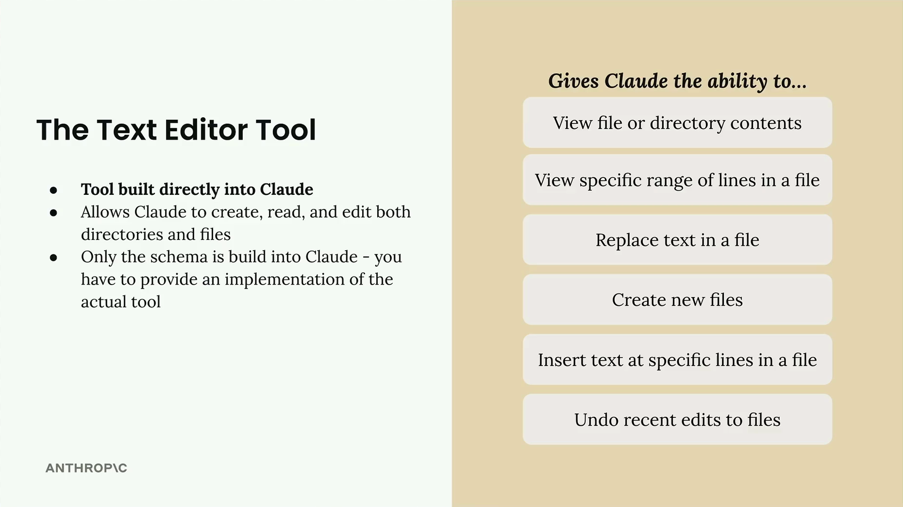
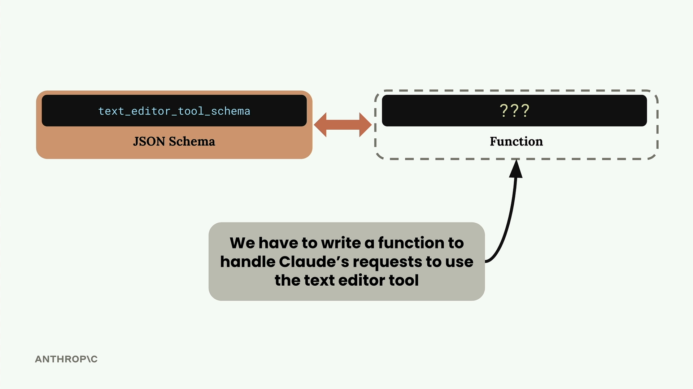
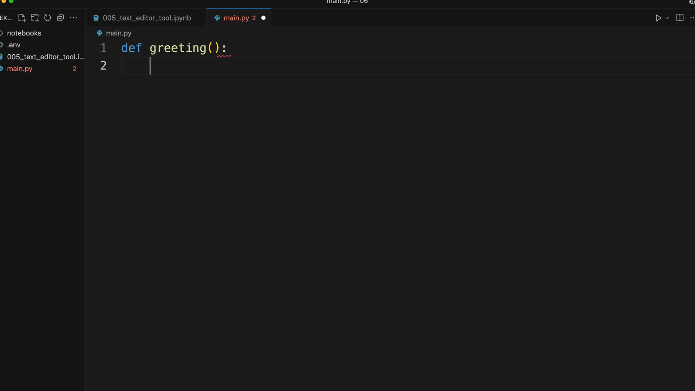

텍스트 편집 도구
중요 참고사항: 모든 모델 버전의 도구 버전 문자열은 여기에서 확인할 수 있습니다: https://docs.anthropic.com/en/docs/agents-and-tools/tool-use/text-editor-tool
Claude에는 처음부터 직접 만들 필요 없는 내장 도구가 하나 있습니다: 텍스트 편집 도구입니다. 이 도구는 Claude가 일반 텍스트 편집기처럼 파일과 디렉토리를 다룰 수 있는 능력을 부여합니다.
텍스트 편집 도구가 할 수 있는 것
텍스트 편집 도구는 Claude에게 포괄적인 파일 조작 기능을 제공합니다:
- 파일 또는 디렉토리 내용 보기
- 파일의 특정 줄 범위 보기
- 파일에서 텍스트 교체
- 새 파일 만들기
- 파일의 특정 줄에 텍스트 삽입
- 파일의 최근 편집 실행 취소

이는 Claude의 능력을 획기적으로 확장하여, 처음부터 소프트웨어 엔지니어처럼 작동할 수 있는 힘을 부여합니다.
구현 요구사항 이해하기
여기서 약간 혼란스러울 수 있습니다: 도구 스키마가 Claude에 내장되어 있지만, 실제 구현은 여전히 직접 제공해야 합니다. 이렇게 생각하세요 - Claude는 파일 작업을 요청하는 방법을 알고 있지만, 실제로 그 작업을 수행하는 코드는 여러분이 작성해야 합니다.

다른 도구를 사용할 때는 JSON 스키마와 함수 구현을 모두 작성합니다. 텍스트 편집 도구의 경우, Claude가 스키마 지식을 제공하지만, 파일 생성, 디렉토리 읽기, 텍스트 교체 등 Claude의 요청을 처리하는 함수는 직접 작성해야 합니다.
스키마 버전
주요 스키마는 Claude에 내장되어 있지만, 요청 시 작은 스키마 스텁을 포함해야 합니다. 정확한 스키마는 사용 중인 Claude 모델에 따라 달라집니다:
def get_text_edit_schema(model):
if model.startswith("claude-3-7-sonnet"):
return {
"type": "text_editor_20250124",
"name": "str_replace_editor",
}
elif model.startswith("claude-3-5-sonnet"):
return {
"type": "text_editor_20241022",
"name": "str_replace_editor",
}

Claude는 이 작은 스키마를 보고 내부적으로 전체 텍스트 편집 도구 사양으로 자동 확장합니다.
실용적인 예시
텍스트 편집 도구가 실제로 작동하는 모습을 살펴보겠습니다. Claude에게 파일 작업을 요청하면, 필요에 따라 도구를 사용하여 파일을 읽고, 수정하고, 생성합니다.
예를 들어, Claude에게 "./main.py 파일을 열고 내용을 요약해 줘"라고 요청하면, Claude는 다음을 수행합니다:
- 텍스트 편집 도구를 사용하여 파일 보기
- 내용 읽기
- 요약 제공
Claude에게 파일 수정을 요청하여 더 나아갈 수 있습니다. 예를 들어: "./main.py 파일을 열고 소수점 다섯 번째 자리까지 원주율을 계산하는 함수를 작성해 줘. 그런 다음 구현을 테스트할 ./test.py 파일을 만들어 줘."
Claude는 다음을 수행합니다:
- 기존 main.py 파일 보기
- 원주율 계산 함수를 포함한 새 구현으로 내용 교체
- 적절한 단위 테스트가 포함된 새 test.py 파일 생성
왜 텍스트 편집 도구를 사용하나요?
현대 코드 편집기에는 이미 AI 어시스턴트가 내장되어 있는데 왜 이 도구가 존재하는지 궁금할 수 있습니다. 텍스트 편집 도구는 다음과 같은 시나리오에서 가치를 발휘합니다:
- 파일을 프로그래밍 방식으로 편집해야 하는 애플리케이션을 개발하는 경우
- 완전한 기능의 코드 편집기에 접근할 수 없는 환경에서 작업하는 경우
- Claude 기반 애플리케이션에 파일 편집 기능을 직접 통합하고 싶은 경우
본질적으로 텍스트 편집 도구는 여러분의 애플리케이션 내에서 고급 AI 기반 코드 편집기의 많은 기능을 복제할 수 있게 해주며, Claude가 파일 시스템과 상호작용하는 방식을 세밀하게 제어할 수 있습니다.